철도신호산업기사 (2004-05-23 기출문제)
1과목: 전자공학
1. 주파수의 일그러짐과 관계가 가장 깊은 것은?
- 험(hum)
- 저항
- 리드선
- 인덕턴스
(정답률: 알수없음)

2. 그림과 같은 연산증폭회로에서 출력전압 V0는?
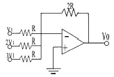
- +6V1
- -6V1
- +12V1
- -12V1
(정답률: 알수없음)
3. 그림과 같은 다이오드회로가 정논리일 때 가지는 논리기능은?
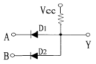
- AND 게이트
- OR 게이트
- NOT 게이트
- NAND 게이트
(정답률: 알수없음)
4. 구형파를 만드는 멀티바이브레이터(multivibrator)의 형태는?
- 플립플롭회로
- 단안정회로
- 비안정회로
- 쌍안정회로
(정답률: 알수없음)
5. 평형검파에 속하는 것은?
- 자승검파
- 플레이트검파
- 그리드검파
- 링검파
(정답률: 알수없음)
6. t=0 에서 스위치를 닫을 경우, 이 때 흐르는 전류 i(t)에 해당되는 것은?
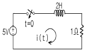
- i(t)= 5e-0.5t
- i(t)= -5e-0.5t
- i(t)= 5(1-e-0.5t)
- i(t)= 5(1+e-0.5t)
(정답률: 알수없음)
7. 원자에 대한 설명으로 옳지 않은 것은?
- 원자핵은 양성자와 중성자로 이루어져 있다.
- 원자는 원자핵과 외각 전자로 이루어져 있다.
- 원자핵의 구조나 외각 전자의 수에 따라 다른 원자가 된다.
- 양성자와 중성자의 질량은 다르다.
(정답률: 알수없음)
8. 도체에 전기장을 가하지 않더라도 캐리어의 밀도 차이에 의해서 흐르는 전류는?
- 음전류
- 드리프트(drift) 전류
- 양전류
- 확산(diffusion) 전류
(정답률: 알수없음)
9. 347(8)을 10진수로 표현하면?
- 96
- 160
- 191
- 231
(정답률: 알수없음)
10. 연산증폭기에서 출력 오프셋 전압은 어떤 측정조건에서 이루어 지는가?
- 입력단자 단락
- 입력단자 접지
- 입력단자 개방
- 출력단자 개방
(정답률: 알수없음)
11. 그림과 같은 회로는 무슨 회로인가?
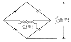
- 전파배전압정류기
- 푸쉬풀증폭기
- 단상반파정류기
- 평형변조기
(정답률: 알수없음)
12. 사인파 전압이 바이어스된 트랜지스터의 베이스에 공급되고, 그 결과 사인파 컬렉터 전압이 0[V] 근처에서 잘라진다면 트랜지스터는?
- 포화로 구동된다.
- 차단으로 구동된다.
- 비선형으로 동작한다.
- 차단과 포화로 구동된다.
(정답률: 알수없음)
13. 그림과 같은 연산 증폭회로가 하는 역할은?
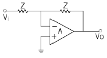
- 배수기
- 부호변환기
- 단위이득 폴로워
- 전압-전류변환기
(정답률: 알수없음)
14. 궤환발진기의 바크하우젠 발진조건 중 옳은 것은? (단, A는 발진기의 증폭도, β는 궤환량이다.)
- βA <1
- βA=1
- βA≥ 1
- βA≤ 1
(정답률: 알수없음)
15. 펄스의 설명이 잘못된 것은?
- 충격파이다.
- 1회에 한하여 발생하는 파형을 임펄스라고 한다.
- 펄스에는 기본파만 있고 고조파가 없는 것이 특징이다.
- 직류를 단속하는 경우 매우 짧은 기간 동안만 전압(또는 전류)이 존재하는 파형이다.
(정답률: 알수없음)
16. h 파라미터를 사용한 CE 등가회로에서 이미터와 베이스간 전압 Vbe는?
- hfeＩb+hoeVce
- hieＩb+hreVce
- hieＩb+hfeVce
- hreＩb+hoeVce
(정답률: 알수없음)
17. 합 S = AB+AB 와 자리올림수 C = AB 와 같은 진리값을 나타내는 회로의 명칭은?
- 반가산기
- 전가산기
- 반감산기
- 전감산기
(정답률: 알수없음)
18. 그림에서 입력 임피던스는 몇 kΩ 인가?
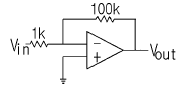
- 1
- 99
- 100
- 101
(정답률: 알수없음)
19. FET 증폭기의 전압 이득이 증가할 때 대역폭은 어떻게 되는가?
- 영향을 받지 않음
- 증가함
- 감소함
- 일그러지게 됨
(정답률: 알수없음)
20. 주파수 변조에서 S/N 비를 높이기 위한 방법이 아닌 것은?
- 대역폭을 넓힌다.
- 변조도를 크게 한다.
- 수신측에 pre-emphasis 회로를 삽입한다.
- 최대 주파수 편이는 변조지수에 비례한다.
(정답률: 알수없음)
2과목: 신호기기
21. 교류 N.S형 전기전철기가 전환도중 해당 궤도 계전기가 무여자로 되었다. 다음중 옳은 것은?
- 전철기 전환이 중단된다.
- 즉시 불일치 상태로 된다.
- 전환전 상태로 복귀한다.
- 계속 전환동작한다.
(정답률: 알수없음)
22. 교류 NS형 전기 전철기에 사용되는 전동기는?
- 직류 직권전동기
- 교류 3상 유도전동기
- 콘덴서 기동형 단상 유도전동기
- 교류 복권전동기
(정답률: 알수없음)
23. 건널목 경보기에서 점퍼선단이 0.06Ω 의 단락선으로 단락시켰을 때 어떤 계전기가 낙하 되어야 하는가?
- 201형(2420형)
- 401형(2440형)
- 경보종
- 경보등
(정답률: 알수없음)
24. 신호제어 계전기는?
- HR
- KR
- TR
- SR
(정답률: 알수없음)
25. 농형 유도전동기의 기동법이 아닌 것은?
- 콘트르파법
- 전전압 기동법
- 기동보상기법
- 기동저항기법
(정답률: 알수없음)
26. 여자 전류가 흐르고서부터 N 접점이 닫힐(접속함) 때까지 다소간 시소를 갖는 계전기는?
- 완방 계전기
- 완동 계전기
- 시소 계전기
- 궤도 계전기
(정답률: 알수없음)
27. 변압기의 부하가 증가할때의 현상으로서 옳지 않은 것은?
- 온도가 상승한다.
- 동손이 증가한다.
- 철손이 증가한다.
- 여자 전류는 변함없다.
(정답률: 알수없음)
28. 전력 변환 기기가 아닌 것은?
- 변압기
- 정류기
- 인버터
- 유도전동기
(정답률: 알수없음)
29. 직류직권 전동기를 운전할때 벨트(belt)를 걸어서 안되는 이유는?
- 직결하지 않으면 속도제어가 곤란하므로
- 손실이 많아지므로
- 벨트가 마모하여 보수가 곤란하므로
- 벨트가 벗겨지면 위험속도에 도달하므로
(정답률: 알수없음)
30. 변압기 기름의 열화 영향에 속하지 않는 것은?
- 공기중 수분의 흡수
- 침식작용
- 절연내력의 저하
- 냉각 효과의 감소
(정답률: 알수없음)
31. 철도 건널목 제어유니트 중 단선, 복선에 공히 사용할 수 있는 것은?
- DC형 제어유니트
- ST형 제어유니트
- DT형 제어유니트
- C형 제어유니트
(정답률: 알수없음)
32. 시소계전기의 시소 허용한도는 별도로 정해진 것을 제외하고는 몇 % 이내로 하여야 하는가?
- ± 50
- ± 40
- ± 30
- ± 10
(정답률: 알수없음)
33. 직류 전동기의 제동법이 아닌 것은?
- 발전제동
- 회생제동
- 역전제동
- 타력제동
(정답률: 알수없음)
34. 전기기계의 전기자등의 철심을 성층철심으로 하는 것은 무엇을 감소시키기 위한 것인가?
- 와류손
- 히스테리시스손
- 표유부하손
- 기계손
(정답률: 알수없음)
35. 직류 전동기의 온도시험을 하는 방법으로 가장 적당한 방법은?
- 반환 부하법
- 와전류 제동기
- 프로니 브레이크법
- 전기 동력계
(정답률: 알수없음)
36. 유도 전동기에서 비례 추이할 수 없는 것은?
- 1차 전류
- 2차 전류
- 2차 동손
- 역률
(정답률: 알수없음)
37. 맥동 주파수가 가장 많고 맥동률이 가장 작은 정류방식은?
- 3상 전파 정류
- 단상 전파 정류
- 3상 반파 정류
- 단상 반파 정류
(정답률: 알수없음)
38. 3상변압기의 병렬운전이 불가능한 것은?
- △-△와 △-△
- △-△와 △-Y
- △-Y 와 Y-△
- Y-△ 와 Y-△
(정답률: 알수없음)
39. 어떤 변압기의 % 저항강하 2%, %리액턴스강하 3%일 때 최대 전압 변동률은 얼마인가
- 3.6
- 4.6
- 5.6
- 6.6
(정답률: 알수없음)
40. 건널목 전동차단기에 사용하는 전동기의 종류로서 맞는 것은?
- 직류직권전동기
- 직류분권전동기
- 직류가동복권전동기
- 직류차동복권전동기
(정답률: 알수없음)
3과목: 신호공학
41. 선로전환기의 밀착은 기본 레일이 움직이지 않도록 한 후 1mm를 벌리는데 몇 kg 을 기준으로 하는가?
- 10
- 50
- 100
- 500
(정답률: 알수없음)
42. 교류와 직류의 접속구간이 있는 경우 어느 한 쪽이 직류궤도회로를 채택하여 사용하면 일정한 구간은 절연할 필요가 있게 된다. 이 때 절연구간의 이상적인 길이는?
- 50m의 사구간이 필요하다.
- 궤도회로부분만 절연하면 된다.
- 1개 열차장 이상이면 된다.
- 2개 열차장이 이상적이다.
(정답률: 알수없음)
43. AF 궤도회로 수신계전기의 단자전압을 수신 카드의 출력트랜지스터 단자에서 측정하였을 때 조정을 필요로 하는 것은? (단, 수신계전기의 정격전압은 7.5V 이다.)
- 6.76V
- 7V
- 8V
- 9.2V
(정답률: 알수없음)
44. 수도권에서 4현시 신호의 배열은?
- Ro, R1, YY, YG, G
- R, Y, YG, G,
- Ro, R1, YY, Y, G
- Ro, R1, Y, YG, G
(정답률: 알수없음)
45. "궤도회로의 레일부터 떨어진 동일 극성의 다른 레일상호간을 접속하는 것"을 무엇이라 하는가?
- 크로스본드
- 졈퍼본드
- 신호본드
- 레일용접본드
(정답률: 알수없음)
46. 접근쇄정의 해정시분을 설정하였을 때 설정시간이 옳은 것은?
- 장내신호기 85초, 입환신호기 32초
- 장내신호기 90초, 입환표지 34초
- 장내신호기 100초, 출발신호기 30초
- 장내신호기 98초, 입환표지 35초
(정답률: 알수없음)
47. 열차의 속도를 자동으로 높일 수 있는 것은?
- ATS
- ATO
- ABS
- ARC
(정답률: 알수없음)
48. 궤조절연 삽입 개소에 대한 유지관리에 있어서의 유의할 점이 아닌 것은?
- 레일 이음매 간격과 이음매 처짐
- 도상 자갈의 절연이음매 접촉 유무
- 침목과 스파이크의 위치 조정
- 레일의 마모 및 끝 닳음 제거
(정답률: 알수없음)
49. 열차집중제어장치(CTC)의 제어방법에 속하지 않는 것은?
- 자동제어(Auto모드)
- 컴퓨터제어(CM)
- 판넬제어(LDM)
- 콘솔제어(CCM)
(정답률: 알수없음)
50. 그림에서 C=60m, B=800m, L=150m, t=2.6초이며, 열차속도가 90km/h 이다. 최소운전시격은 몇 초인가?
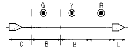
- 75초
- 76초
- 77초
- 78초
(정답률: 알수없음)
51. 신호장치의 분류로 옳은 것은?
- 입환신호기는 출발신호기의 종속신호기이다.
- 유도신호기는 장내신호기의 종속신호기이다.
- 서행신호기는 주신호기이다.
- 진로표시기는 장내 및 출발신호기의 신호부속기이다.
(정답률: 알수없음)
52. 연동장치를 기계연동, 전기연동 및 전자연동장치로 나눈 것은?
- 쇄정의 종별로 나눈 것이다.
- 선로의 종별로 나눈 것이다.
- 폐색의 종별로 나눈 것이다.
- 궤도의 종별로 나눈 것이다.
(정답률: 알수없음)
53. 철도신호를 대별한 것은?
- 상치신호, 임시신호, 수신호
- 상치신호, 전철전호, 열차표시
- 신호, 전호, 표지
- 서행신호, 서행예고신호, 서행해제
(정답률: 알수없음)
54. 건널목 사고를 줄이기 위한 대책으로 다음 중 가장 좋은 방법은?
- 경보장치 설치
- 지장물 검지장치 설치
- 전동차단기 설치
- 입체교차설비
(정답률: 알수없음)
55. CTC 장치에서 CDTS의 수동계 절체를 할 수 없는 것은?
- PTS
- RSB
- 사령실 보수자용 콘솔
- 사령실 조작표시 판넬
(정답률: 알수없음)
56. 궤도회로의 이상기를 사용하는 목적은?
- 상용주파수를 배주 또는 분주하기 위하여
- 궤도회로 단락시 과대 단락전류 방지
- 궤도계전기의 국부 코일의 위상 조정용
- 궤도계전기의 궤도 코일의 위상 조정용
(정답률: 알수없음)
57. 그림과 같이 도시한 방법으로 구성한 궤도회로는?
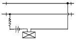
- 폐전로식 궤도회로
- 개전로식 궤도회로
- AF 궤도회로
- 3위식 궤도회로
(정답률: 알수없음)
58. 열차자동정지장치 [ATS(S-1)]형의 특징을 설명한 것 중 옳지 않은 것은?
- 선택도(Q값)는 50∼190 범위이다.
- 제어계전기의 종류에는 DC 24V형이 있다.
- 지상자의 공진주파수는 1⑤kHz 이다.
- 지상자 코일의 인덕턴스는 300μH 이다.
(정답률: 알수없음)
59. 폐색구간을 5현시로 분할하고자 한다. 다음 중 기준이 되는 열차는 어떤 열차인가?
- 제동거리가 짧은 전동차
- 제동거리가 짧은 여객열차
- 제동거리가 가장 긴 화물열차
- 가장 빠른 열차
(정답률: 알수없음)
60. 궤도회로에서 보완회로의 역할은?
- 공급전원 보완
- 사구간 보완
- 단락감도 보완
- 계전기회로 보완
(정답률: 알수없음)
4과목: 회로이론
61. 그림과 같은 L형 회로의 4단자 ABCD 정수중 A는?
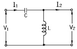
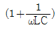
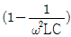
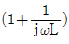
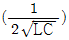
(정답률: 알수없음)
62. 9[Ω]과 3[Ω]의 저항 3개를 그림과 같이 연결 하였을 때 A,B 사이의 합성저항은 얼마인가?
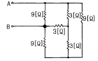
- 6[Ω]
- 4[Ω]
- 3[Ω]
- 2[Ω]
(정답률: 알수없음)
63. 그림 ab간에 40[V]의 전압을 가할 때 10[A]의 전류가 흐른다. r1 및 r2 에 흐르는 전류비를 1:2로 하려면 r1 및 r2의 저항[Ω]은 각각 얼마인가?
- r1 = 6, r2 = 3
- r1 = 3, r2 = 6
- r1 = 4, r2 = 2
- r1 = 2, r2 = 4
(정답률: 알수없음)
64. 임피던스 Z(s)가
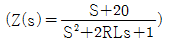
로 주어지는 2단자회로에 직류전류원 15[A]를 가할 때 이 회로의 단자전압 [V]은?- 200
- 300
- 400
- 600
(정답률: 알수없음)
65. 다음과 같은 회로에서 L=50[mH], R=20[KΩ ]인 경우 회로의 시정수를 구하면 얼마인가?
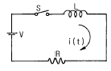
- 4.0 [μ sec]
- 3.5 [μ sec]
- 3.0 [μ sec]
- 2.5 [μ sec]
(정답률: 알수없음)
66. RC저역 필터회로의 전달함수 G(jω)는 ω =0일 때 얼마인가?
- 0
- 1
- 0.5
- 0.707
(정답률: 알수없음)
67. 대칭좌표법에 의하여 3상 회로에 대한 해석중 잘못된 것은?
- △결선이든 Y결선이든 세 선전류의 합은 영(零)이면 영상분도 영(零)이다.
- 선간전압의 합이 영(零)이면 그 영상분은 항상 영(零)이다.
- 선간전압이 평형이고 상순이 a-b-c이면 Y결선에서 상전압의 역상분은 영(零)이 아니다.
- Y결선중 성접지시에 중성선 정상분의 선전류에 대하여서 ∞ 의 임피이던스를 나타낸다.
(정답률: 알수없음)
68. 대칭 3상 회로가 있다. Y결선된 전원 한상의 전압의 순시값이 Va =√2 220sin ω t + √2 50sin (3ω t +30° )[V]일 때 상전압 및 선간전압의 실효값[V]은?
- 225.61, 390.77
- 225.61, 381.⑤
- 270, 467.65
- 270, 390.77
(정답률: 알수없음)
69. 가정용 전원의 전압이 기본파가 100[V]이고 제7고조파가 기본파의 4[%], 제11고조파가 기본파의 3[%]이었다면 이 전원의 일그러짐 률은 몇 [%]인가?
- 11
- 10
- 7
- 5
(정답률: 알수없음)
70. 전달함수 C(s) = G(s)R(s)에서 입력함수를 단위 임펄스즉 δ (t)로 가할때 계의 응답은?
- C(s)=G(s)δ (s)
- C(s)=G(s)/δ (s)
- C(s)=G(s)/s
- C(s)=G(s)
(정답률: 알수없음)
71. 그림에서 a,b 단자에 200[V]를 가할때 저항 2[Ω]에 흐르는 전류 I1[A]는?
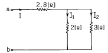
- 40
- 30
- 20
- 10
(정답률: 알수없음)
72. 3상 전력을 측정하는데 두 전력계 중에서 하나가 0이었다 이때의 역률은 어떻게 되는가?
- 0.5
- 0.8
- 0.6
- 0.4
(정답률: 알수없음)
73. 어떤 R-L-C 병렬회로가 병렬공진되었을 때 합성 전류는?
- 최대가 된다.
- 최소가 된다.
- 전류는 흐르지 않는다.
- 전류는 무한대가 된다.
(정답률: 알수없음)
74. 그림과 같은 회로에서 저항 R[Ω ]과 정전용량 C[F]의 직렬 회로에서 잘못 표현된 것은?
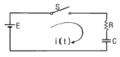
- 회로의 시정수는 τ =CR [초] 이다
- t=0에서 직류전압 E[V]를 가했을때 t[초]후의 전류
 [A]이다.
[A]이다. - t=0에서 직류전압 E[V]를 가했을때 t[초]후의 전류
 [A]이다.
[A]이다. - R-C 직렬회로에서 직류전압 E[V]를 충전하는 경우 회로의 전압 방정식은
 이다.
이다.
(정답률: 알수없음)
75.
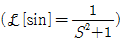
을 이용하여 ①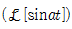
및 ②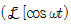
를 구하면?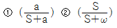
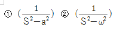
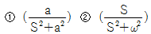
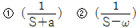
(정답률: 알수없음)
76. 전원과 부하가 다같이 Δ 결선된 3상 평형 회로가 있다. 전원 전압이 200[V], 부하 임피던스가 6+j8[Ω ]인 경우 선전류[A]는?
- 20
- 20/√3
- 20√3
- 10 3
(정답률: 알수없음)
77. 파고율의 관계식이 바르게 표시된 것은?
- 최대값/실효값
- 실효값/최대값
- 평균값/실효값
- 실효값/평균값
(정답률: 알수없음)
78. 그림과 같은 이상변압기에 대하여 성립되지 아니하는 관계식은? (단, n1, n2는 1차 및 2차 코일의 권수) ( n은 권수비 ; n=n1/n2 )
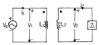
- V1i1=V2i2
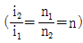
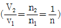
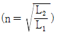
(정답률: 알수없음)
79. 3상 회로에 있어서 대칭분 전압이 V0=-8+j3[V],V1=6-j8[V],V2=8+j12[V]일때 a상의 전압[V]은?
- 6+j7
- 8+j12
- 6+j14
- 16+j4
(정답률: 알수없음)
80. f(t)=δ (t)-bε-bt 의 라플라스 변환은? (단, δ (t)는 임펄스 함수이다.)
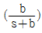
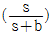
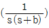
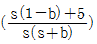
(정답률: 알수없음)